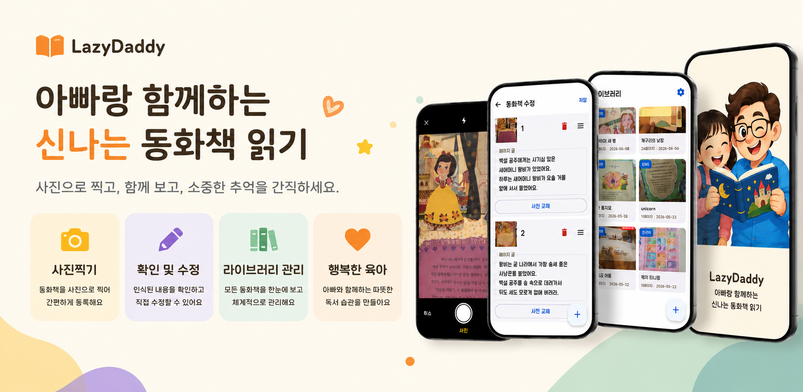

1. 찍기
동화책 페이지를 카메라로 한 장씩 촬영합니다. 자동으로 글자를 인식해 텍스트를 추출합니다.
레이지 대디 (LazyDaddy)
LazyDaddy는 부모와 보호자가 종이 동화책을 촬영하고, 글자를 인식한 뒤 한국어와 영어로 자연스럽게 읽어 줄 수 있도록 만든 안드로이드 앱입니다.
Android app
매일 밤 같은 책을 여러 번 읽어 주는 부모의 수고를 덜고, 아이와 함께 앉아 이야기에 집중할 수 있게 돕는 작은 도구입니다. 사진 촬영, OCR, 텍스트 편집, TTS 재생까지 하나의 흐름으로 이어지며, 책마다 한국어 또는 영어 언어 정보를 저장해 라이브러리에서 쉽게 확인할 수 있습니다.
Storytime made easier
매일 밤 아이에게 책을 읽어 주고 싶지만, 목이 쉬거나 같은 책을 열 번씩 반복하다 지치신 적 있으신가요? LazyDaddy가 그 수고를 대신해 드립니다. 집에 있는 종이 동화책을 카메라로 찍기만 하면, AI가 실감 나는 목소리로 책을 읽어 줍니다.

Store readiness
Core flow
동화책 페이지를 카메라로 한 장씩 촬영합니다. 자동으로 글자를 인식해 텍스트를 추출합니다.
추출된 텍스트를 확인하고 책으로 저장합니다. 잘못 인식된 글자는 직접 수정할 수 있습니다.
저장된 책을 재생하면 AI TTS가 목소리로 읽어 줍니다. 아이 옆에 앉아 그냥 함께 들으세요.
Features
Google ML Kit 한국어 온디바이스 인식으로 인터넷 없이도 글자를 추출합니다.
Google Cloud TTS를 사용한 자연스러운 한국어 음성과 기기 내장 TTS를 지원합니다.
대화문을 자동으로 분석해 내레이터와 캐릭터별 목소리를 다르게 설정할 수 있습니다.
저장한 동화책은 기기 안에만 보관됩니다. 클라우드 계정 없이 사용할 수 있습니다.
인식이 어긋난 페이지는 언제든 다시 찍거나 직접 수정할 수 있습니다.
영어 인식과 음성도 지원해 원어민에 가까운 발음으로 영어책을 들려줄 수 있습니다.
인식된 텍스트를 수정해 아이 이름을 넣거나 이야기를 우리 가족만의 스토리로 각색할 수 있습니다.
로그인도, 구독도 없이 바로 사용할 수 있습니다.
Voice and privacy
LazyDaddy는 두 가지 음성 엔진을 지원합니다. 앱 설정에서 원하는 엔진과 목소리를 자유롭게 선택할 수 있습니다.
| 엔진 | 특징 | 인터넷 필요 여부 |
|---|---|---|
| Google Cloud TTS | 가장 자연스러운 한국어와 영어 음성 | 필요 |
| 기기 내장 TTS (Android) | 오프라인 사용 가능 | 불필요 |
Recommended for
지금 바로 설치하고 첫 번째 동화책을 만들어 보세요. 아이의 눈이 반짝이는 그 순간, LazyDaddy가 함께합니다.
Business